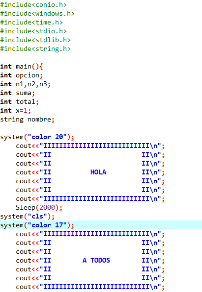
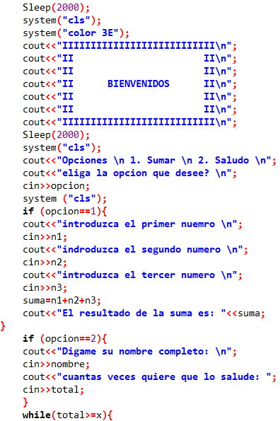
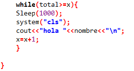

<title>INDEX.HTMl</title>
</head>
<body>

</body>
</html>
<center><font size="100px" color="#000000">FINAL</font></center>
<hr color="#FAFAFA" size="7px"> 
<body bgcolor="#58FAF4">

	<div style="position: absolute;top:100px;left:280px"></div>
	<div style="position: absolute;top:100px;left:760px"></div>
	<div style="position: absolute;top:780px;left:280px"></div>

	<div style="position: absolute;top: 780px; left: 600px;width: 550px ;height: 320px;background: white;border:solid black;font-family: COOPER BLACK;font-size:30px ">
      
     Me esta encantando este tema de c++ sobre todo los ciclos y los condicionales ya que le dan mas facilidad a la ejecucion del proyecto que se este trabajando y ademas sera mas automatico, y el final me parecio bastante facil, ya que cada dia estuve mejorando para hacer mejores cosas
    </div>